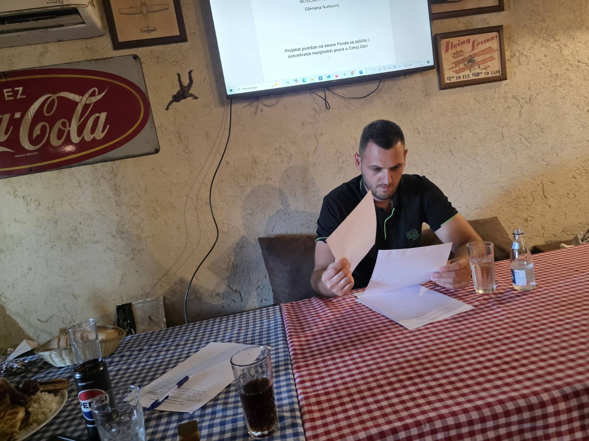
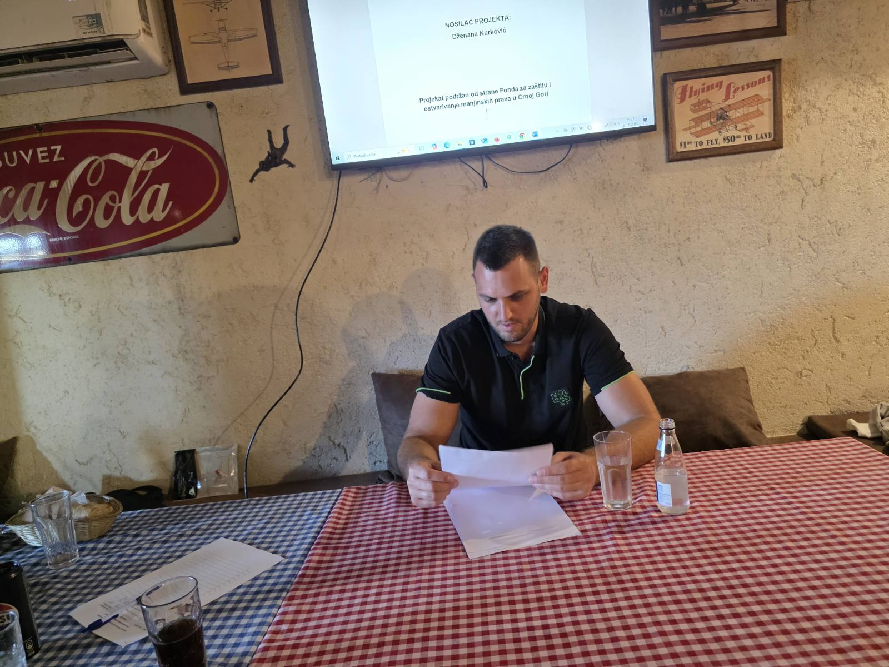

Gospodine Metđonaj, kako Vi lično doživljavate teritorijalni identitet? Da li on ima važno mjesto u Vašem životu?
Enis Metđonaj:
Apsolutno. Teritorijalni identitet za mene nije samo veza s geografskom lokacijom – on je duboko ličan osjećaj pripadnosti, nešto što se ne može objasniti samo riječima. To je osjećaj kad osjetiš da ti pejzaž, ljudi, jezik i mirisi kraja u kojem si rođen nisu spoljašnji svijet, nego dio tebe samog. Moj identitet je čvrsto vezan za jugoistočni dio Crne Gore, za obalu, za Ulcinj – to su prostori koji nisu samo mjesto boravka, već duhovni i kulturni temelj mog bića.
Možete li opisati šta je to posebno u teritoriji s kojom se identifikujete? Šta je, po Vama, čini jedinstvenom?
Enis Metđonaj:
Ono što čini moj kraj jedinstvenim jeste spoj prirode, historije i duha ljudi. Imamo more i rijeke, maslinjake i stare kamene kuće, bogatu kulturnu baštinu. Ovdje se vijekovima susreću jezici, vjere, narodi – i ta raznolikost nas nije podijelila, već nas je oblikovala kao otvorenu, tolerantnu i ponosnu zajednicu. Takođe, običaji, jezik koji govorimo u svakodnevici – albanski dijalekt sa lokalnim karakteristikama – sve to daje poseban identitet prostoru. To nije teritorija koju samo vidiš, to je teritorija koju osjećaš.
Kako se, po Vašem mišljenju, mladi Albanci u Crnoj Gori danas odnose prema svom jeziku – da li ga njeguju ili se udaljavaju od njega??
Enis Metđonaj:
Ogleda se u svemu – od načina na koji pozdravljam komšiju, preko jela koja pripremamo u porodici, pa do izraza koje koristimo. Moj svakodnevni jezik je albanski, sa specifičnim lokalnim nijansama, i to je direktna veza s teritorijom. Isto tako, osjećaj za red i gostoprimstvo, poštovanje starijih, pa čak i način na koji doživljavamo prostor i vrijeme – sve to nosi pečat kraja iz kojeg dolazim. Ovdje se mnogo toga ne govori direktno, ali se zna – to je nešto što naučite živeći u određenoj sredini i postaje dio vas.
Koliko su kultura, tradicija i jezik uticali na vaše formiranje kao osobe?
Enis Metđonaj:
Ogromno. Kultura me naučila ko sam u širem smislu – kao deo naroda, istorije, vrednosnog sistema. Tradicija mi je dala osećaj pripadnosti – one sitnice koje možda ne primećujemo dok ih ne izgubimo: miris hleba iz detinjstva, način na koji se pozdravljamo, rituali porodičnih okupljanja. Jezik je, pak, temelj mog izražavanja – u jeziku se krije način na koji mislimo, a ne samo kako govorimo. Ponekad, kad čujem stare izreke, osetim više istine nego u stotinama stranica moderne psihologije. Kultura, tradicija i jezik su kao senka – idu sa mnom svuda, čak i kad mislim da sam ih ostavio negde iza.
Da li smatrate da teritorijalni identitet može uticati na ekonomski razvoj zajednice?
Enis Metđonaj:
Naravno. Identitet prostora može biti ključna prednost ako se pravilno prepozna i iskoristi. Kada znamo šta nas čini posebnima – bilo da je to lokalna kultura, tradicija, specifična ponuda – možemo to pretvoriti u resurs. U turizmu, na primjer, autentičnost je ono što gosti traže. Ljudi više ne putuju samo zbog pejzaža, već žele doživljaj – a on dolazi kroz identitet mjesta. Ako lokalna zajednica zna svoj identitet, može da gradi održiv razvoj, privuče investitore, zadrži mlade i kreira ponudu koja je duboko ukorijenjena u prostoru.
Kako vidite ulogu mladih u očuvanju teritorijalnog identiteta?
Enis Metđonaj:
Mladi su ključni. Oni moraju da osjete da njihova sredina ima vrijednost, da nije nešto iz čega treba pobjeći. Kada mladima omogućimo da aktivno učestvuju – u kulturi, obrazovanju, lokalnim inicijativama – oni ne samo da se identifikuju sa svojim krajem, već ga i brane, čuvaju, razvijaju. Potrebno je stvarati prilike da mladi stvaraju sadržaj koji je savremen, ali utemeljen u identitetu njihove teritorije. Time se identitet ne čuva kao slika u ramu, već kao živa praksa.
Da li osjećate da se teritorijalni identitet mijenja s vremenom? I ako da – da li je to pozitivno ili negativno?
Enis Metđonaj:
Identitet se mijenja, i to je prirodno. Dolaze nove generacije, drugačije navike, uticaji interneta, migracija. Nije problem što se mijenja – problem je ako se gubi suština. Pozitivna promjena je ona koja nadograđuje postojeće vrijednosti, koja ih čini savremenim i dostupnim. Negativna promjena je kada se briše autentičnost radi uniformnosti. Moj stav je da treba biti otvoren za novo, ali nikada po cijenu gubitka onoga što nas čini posebnima.
Kako se teritorijalni identitet reflektuje u jeziku koji govorite?
Enis Metđonaj:
Albanski je moj maternji jezik, ali ne govorim ga isto kao neko iz Tirane ili Skadra. Moj dijalekt nosi lokalne izraze, često miješane s riječima iz crnogorskog ili turskog, a to govori o istorijskom kontekstu prostora. Čak i tempo govora, intonacija, način na koji se izražava emocija – sve je to rezultat teritorijalnog identiteta. Kroz jezik, vi bukvalno čujete geografiju i istoriju jednog kraja. I zato smatram da je jezik temelj teritorijalnog identiteta.
Da li turizam i razvoj mogu narušiti identitet jednog kraja ili ga dodatno osnažiti?
Enis Metđonaj:
To je pitanje koje zavisi isključivo od pristupa – turizam i razvoj mogu biti i šansa i prijetnja za teritorijalni identitet. Ako se turizam razvija planski, s uvažavanjem lokalne kulture, jezika, pejzaža i načina života, on može značajno ojačati identitet jednog kraja. U tom slučaju turizam nije samo izvor prihoda, već postaje i sredstvo očuvanja tradicije. Primjeri za to su festivali lokalne hrane, kulturne manifestacije, radionice starih zanata, prezentacije narodnih nošnji i običaja – sve to može biti autentična ponuda koja privlači turiste, a istovremeno jača svijest lokalnog stanovništva o vrijednosti onoga što već imaju.
Međutim, s druge strane, ako se teritorija posmatra samo kao prostor za profit, bez zaštite autentičnih vrijednosti, tada turizam može postati destruktivan. Vidjeli smo primjere gdje su izgradnja apartmanskih naselja, betoniranje obale i forsiranje "instant sadržaja" potpuno izmijenili lice jednog mjesta. Tada se gubi duh zajednice, lokalna kultura biva potisnuta, a identitet sveden na suvenir.
U mom kraju, Ulcinju i okolini, ta borba je stalno prisutna. Ljudi su svjesni vrijednosti koju imaju – od prirodnih resursa do kulturne baštine – ali postoji potreba da se donesu dugoročne strategije koje će čuvati tu posebnost. Turizam može biti izuzetna šansa, ali samo ako se lokalni identitet postavi kao osnova razvoja, a ne kao prepreka modernizaciji.
Kako teritorijalni identitet utiče na odnose među ljudima u lokalnoj zajednici?
Enis Metđonaj:
Teritorijalni identitet igra ogromnu ulogu u međuljudskim odnosima, često i više nego što ljudi svjesno primjećuju. On stvara osjećaj pripadnosti, zajedničkog porijekla i nepisanih pravila ponašanja. Ljudi koji dolaze iz istog kraja, čak i ako se ne poznaju lično, često odmah osjete bliskost – kroz govor, geste, način izražavanja, pa i kroz šalu. Postoji jedno osnovno povjerenje, jer znaš da dijelite slične vrijednosti. To može biti poštovanje prema starijima, način kako se dočekuje gost, kako se rješavaju nesporazumi – sve su to stvari koje proizlaze iz zajedničkog teritorijalnog koda.
Takođe, teritorijalni identitet često jača osjećaj odgovornosti. Ljudi se trude da pomognu jedni drugima, jer znaju da ne predstavljaju samo sebe, već i svoj kraj. Kada neko iz našeg mjesta uspije u poslu, sportu ili kulturi, cijela zajednica to doživljava kao zajednički uspjeh. Slično, kada se desi neka nepravda ili potreba, često se prvo aktivira lokalna solidarnost – jer to nije "neko tamo", već "naš čovjek".
Naravno, identitet može i postati izvor zatvorenosti ako se shvati na pogrešan način – kao isključivost prema drugima. Zato vjerujem da je važno razvijati teritorijalni identitet koji ne ograničava, već povezuje. On treba biti temelj sigurnosti i samopouzdanja, a ne zid prema onima koji dolaze sa strane. U mom iskustvu, kada ljudi znaju ko su i gdje pripadaju, lakše prihvataju i poštuju i one koji dolaze iz drugih sredina. Jer tada identitet nije slabost, već snaga.
Koja je Vaša poruka ljudima koji napuštaju svoje krajeve – kako mogu održati vezu sa teritorijalnim identitetom?
Enis Metđonaj:
Odlazak ne mora značiti zaborav. Gdje god da čovjek ide, može da nosi svoj identitet sa sobom – kroz jezik, običaje, vrijednosti koje živi. Čak i ako živi u drugoj zemlji, može da čita knjige na svom jeziku, da govori s djecom o kraju iz kojeg dolazi, da dođe ljeti, da doprinese lokalnoj zajednici izdaleka. Teritorijalni identitet nije vezan isključivo za fizičko prisustvo – on je mentalni i emocionalni prostor koji možemo nositi cijeli život. I ako ga njegujemo, nikada ga nećemo izgubiti.



foto: Dzenana Nurković
← Nazad na početnu stranu